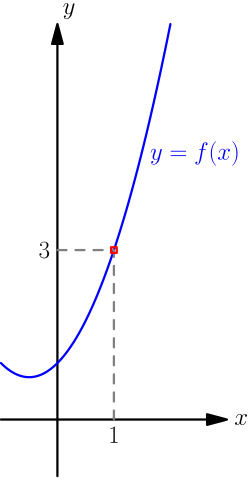
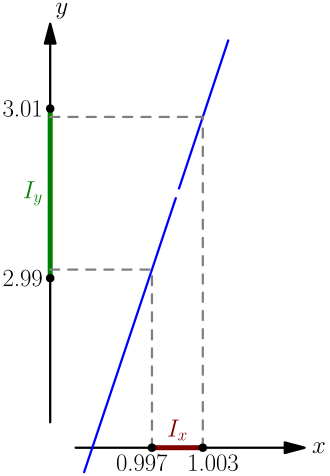

Definition of Limit¶
On this page, the word "function" means a function that takes in a real number as its only argument, and evaluates to another real number. Some real numbers might not be valid inputs of the function; for example, square root is a function that accepts only nonnegative inputs.
Limit is a very important concept in calculus. There are two common ways to introduce it: teaching students to calculate limits without talk much about why they work like they do (high schools), and proving all the properties of limits needed very carefully with somewhat difficult proofs (university). I will aim for something in the middle; my goal is to show you how limits work without doing anything too difficult.
The Idea¶
Let's get started by plugging some numbers into the function $$ f(x) = \frac{x^3-1}{x-1}. $$ We notice that $f(1)$ is undefined, because that gives division by zero. However, if we plug in some values that are just a little bit greater than $1$, we get this:
| $x$ | $f(x)$ |
|---|---|
| $1$ | undefined |
| $1.1$ | $3.31000\dots$ |
| $1.01$ | $3.03010\dots$ |
| $1.001$ | $3.00300\dots$ |
| $1.0001$ | $3.00030\dots$ |
| $1.00001$ | $3.00003\dots$ |
The values of $f$ seem to be quite close to $3$.
We notice a similar thing if we plug in values that are just a little bit less than $1$:
| $x$ | $f(x)$ |
|---|---|
| $0.9$ | $2.71000\dots$ |
| $0.99$ | $2.97010\dots$ |
| $0.999$ | $2.99700\dots$ |
| $0.9999$ | $2.99970\dots$ |
| $0.99999$ | $2.99997\dots$ |
In this situation, we say that the limit of $f(x)$ as $x \to 1$ (read: $x$ approaches $1$, $x$ goes to $1$) is $3$, and we write $$ \lim_{x \to 1} f(x) = 3. $$ This lim notation is somewhat tall, so if it's somewhere in the middle of text, it's often written with the $x \to 1$ part off to the side, like $\lim_{x \to 1} f(x)$.
We will work with limits a lot, and that will include proving some things about limits. Even though plugging in a bunch of numbers is a good way to make a guess about the limit, it won't suffice anymore when we want to do something more generally and we can't just plug in numbers. For that, we need a better definition of limit.
Definition with Intervals¶
Consider the open interval $(2.99, 3.01)$; that is, the set of all numbers between $2.99$ and $3.01$. The ends of this interval are $3 \pm 0.01$, and the center of the interval is $3$. The interval is open, which means that the end points are not included in the interval, $2.99 \notin (2.99, 3.01)$ and $3.01 \notin (2.99, 3.01)$.
By plugging in more numbers, we notice that $$ f(0.997) = 2.991009 \in (2.99, 3.01) $$ and $$ f(1.003) = 3.009009 \in (2.99, 3.01). $$ Let's see what happens for numbers between $0.997$ and $1.003$.
| $x$ | $f(x)$ |
|---|---|
| $0.997$ | $2.991009 \in (2.99, 3.01)$ |
| $0.998$ | $2.994004 \in (2.99, 3.01)$ |
| $0.999$ | $2.997001 \in (2.99, 3.01)$ |
| $1.000$ | undefined |
| $1.001$ | $3.003001 \in (2.99, 3.01)$ |
| $1.002$ | $3.006004 \in (2.99, 3.01)$ |
| $1.003$ | $3.009009 \in (2.99, 3.01)$ |
We can't check every number between $0.997$ and $1.003$ with a calculator, but what seems to be happening is that $$ f(\text{any number between $0.997$ and $1.003$ except $1$}) \in (2.99,3.01). $$ Let $I_x=(0.997,1.003)$ denote the interval of numbers that we plug into the function, and let $I_y=(2.99,3.01)$ denote the interval containing the outputs of the function. We started with $I_y=(2.99,3.01)$, and then found an interval $I_x$ such that $$ f(\text{any number in $I_x$ except $1$}) \in I_y. $$ The definition of $\lim_{x \to 1} f(x) = 3$ is that we always find some $I_x$ interval, no matter which $I_y$ interval we choose. So, the definition goes as follows: for any open interval $I_y$ centered around $3$, there is some open interval $I_x$ centered around $1$ such that $$ f(\text{any number in $I_x$ except $1$}) \in I_y. $$ We have been looking at an example where the limit as $x$ approaches $1$ is $3$, but the same works for any other number $a$ being approached, and with any other limit value $L$.
Let $a,L \in \mathbb{R}$, and let $f$ be a function. The limit is defined as follows: we write $\lim_{x \to a} f(x) = L$, if for any open interval $I_y$ centered around $L$, there is some open interval $I_x$ centered around $a$ such that $$ f(\text{any number in $I_x$ except $a$}) \in I_y. $$ Here I refer to $I_x$ as the input interval, and I refer to $I_y$ as the output interval.
So far we have worked with $a=1$ and $L=3$.
Things to Note¶
Explaining the above definition with words, it says that if we want to get the values of a function into any open interval around $b$ (no matter how small), then there is an interval around $a$ that allows us to do so.
The calculations we did with a calculator and our example function $f$ don't prove that $\lim_{x \to 1} f(x) = 3$. To actually prove it, we should check all the infinitely many $I_y$ intervals instead of just $(2.99, 3.01)$.
The definition of a limit doesn't use $f(a)$ at all. In our example, we had $a=1$, and $f(a)$ was undefined; even that didn't matter, because we never needed to calculate $f(a)$. This makes sense, because limits are all about what happens around $a$, not at all about what happens at exactly $x=a$.
If we pick a smaller $I_y$ interval that the values of the function must fit into, then we likely also need more restrictions for which values of the function we are considering, which we can do by choosing a smaller $I_x$ interval. This is fine; the choice of the interval $I_x$ may depend on the interval $I_y$ being used.
The openness of the intervals isn't needed for anything. The same definition could be presented with closed intervals, which would include the end points, but open intervals are much more commonly used for this so I did it that way too.
This definition is usually written in a slightly different way, and that's called the $\epsi,\delta$ definition of a limit. The name comes from using the greek epsilon letter $\epsi$ to denote the size of $I_y$, so that $$ I_y = (b-\epsi,b+\epsi), $$ and using the delta letter $\delta$ to denote the size of $I_x$ similarly, $$ I_x = (a-\delta,a+\delta). $$
Graph¶
Let's figure out what the definition of the limit looks like in the graph of a function. We continue with the same example that we had earlier on this page; that is, $$ f(x) = \frac{x^3-1}{x-1}, \quad I_y = (2.99, 3.01), \quad I_x = (0.997, 1.003). $$ The graph of $f$ looks like this:

Let's zoom onto the square that I marked with red. The interval $I_y=(2.99, 3.01)$ is for the values of the function, so I'll draw it on the $y$ axis, and $I_x=(0.997,1.003)$ is for the inputs of the function, so I'll draw that on the $x$ axis. The axises should actually be quite far away from the red square that we're zooming into, but I'm drawing them anyway because I want something to mark intervals and numbers onto.

There's a hole in the graph because $f(1)$ is undefined; that gives division by zero. The dashed lines are showing which $f$ values we get for inputs in $I_x$. Note that the values of $f$ that we get by plugging in numbers from $I_x$ don't "fill" all of $I_y$, but that doesn't matter; what matters is that they all go somewhere inside $I_y$.